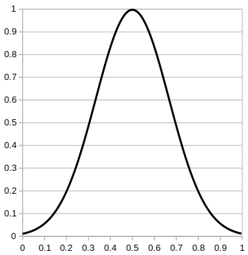

Index
All Classes|All Packages|Constant Field Values|Serialized Form
G
- Gaussian - Class in au.edu.anu.ymuit.ui.colour.functions
- Gaussian() - Constructor for class au.edu.anu.ymuit.ui.colour.functions.Gaussian
- GAUSSIAN - Enum constant in enum au.edu.anu.ymuit.ui.colour.functions.FunctionTypes
-
* 
- getColour() - Method in class au.edu.anu.ymuit.ui.colour.ColourItem
-
Underlying Javafx color
- getColour(double, double, double) - Method in class au.edu.anu.ymuit.ui.colour.Palette
-
Returns the palette colour for the value v.
- getContrastingColourNamePairs(PaletteSize, Color, double) - Static method in class au.edu.anu.ymuit.ui.colour.ColourContrast
-
Creates a list of color name pairs that contrast with the given background colour and are distant in perceived colour from each other in 3d space.
- getContrastingColourNames(PaletteSize, Color, double) - Static method in class au.edu.anu.ymuit.ui.colour.ColourContrast
-
Creates a list of named colours that contrast with the given background colour and are distant in perceived colour from each other in 3d space.
- getContrastingColours(PaletteSize, Color, double) - Static method in class au.edu.anu.ymuit.ui.colour.ColourContrast
-
Creates a list of named colours that contrast with the given background colour and are distant in perceived colour from each other in 3d space.
- getContrastingColours64(PaletteSize, Color, double) - Static method in class au.edu.anu.ymuit.ui.colour.ColourContrast
-
Up to 64 colours from 4096 generated colours.
- getDecimalFormat(int) - Static method in class au.edu.anu.ymuit.util.Decimals
-
Create a
DecimalFormatgiven a number of decimal places. - getDefault() - Static method in enum au.edu.anu.ymuit.ui.colour.PaletteTypes
-
The default palette (BrownYellowGreen - NDVI)
- getFunction() - Method in enum au.edu.anu.ymuit.ui.colour.functions.FunctionTypes
-
The parameterized function associated with this enum value
- getIndex() - Method in class au.edu.anu.ymuit.ui.colour.ColourItem
-
Index order in which colors were produced.
- getName() - Method in class au.edu.anu.ymuit.ui.colour.ColourItem
-
Javafx name for this colour
- getPalette() - Method in enum au.edu.anu.ymuit.ui.colour.PaletteTypes
-
The palette instance for this enum value
- getpBlue() - Method in class au.edu.anu.ymuit.ui.colour.ColourItem
-
Returns the linearized value of the blue channel.
- getpGreen() - Method in class au.edu.anu.ymuit.ui.colour.ColourItem
-
Returns the linearized value of the green channel.
- getpLum() - Method in class au.edu.anu.ymuit.ui.colour.ColourItem
-
Returns the perceived luminosity of the colour (L*)
- getpRed() - Method in class au.edu.anu.ymuit.ui.colour.ColourItem
-
Returns the linearized value of the red channel.
- getValueAt(int) - Method in class au.edu.anu.ymuit.ui.colour.Band
-
Returns the value of a colour band in the range 0.0 - 1.0 at the given index
- greenYellowBrown() - Static method in class au.edu.anu.ymuit.ui.colour.PaletteFactory
-
*
- GreenYellowBrown - Enum constant in enum au.edu.anu.ymuit.ui.colour.PaletteTypes
-
*
All Classes|All Packages|Constant Field Values|Serialized Form